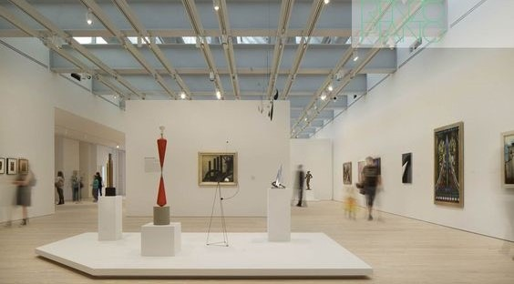

art gallery
Арт-галерея — это волшебное пространство, где искусство оживает, раскрывая перед зрителями свои тайны и эмоции. Здесь, среди живописных картин и изящных скульптур, каждый может найти отражение своего внутреннего мира. Каждое произведение — это не просто изображение или объект, а целая история, рассказанная языком цвета, формы и света.
Когда вы входите в галерею, вас окутывает особая атмосфера. Тишина, прерываемая только шепотом восхищенных посетителей, создает ощущение уединения и сосредоточенности. Взгляд останавливается на картинах, выполненных в различных техниках — от классической масляной живописи до ярких акриловых работ, каждая из которых передает настроение и чувства художника. Скульптуры, стоящие на пьедесталах, словно живые, проносят зрителя через пространство и время, заставляя задуматься о глубине человеческого существования.
Но арт-галерея — это не только место для созерцания. Здесь часто проводятся выставки, которые знакомят с творчеством как известных мастеров, так и начинающих художников. Мастер-классы и лекции позволяют посетителям не только узнать больше о процессе создания искусства, но и попробовать себя в роли художника, ощутив радость творчества на собственном опыте. Такие мероприятия создают живую связь между художниками и зрителями, открывая новые горизонты для понимания и восприятия искусства.
Арт-галереи также играют важную роль в культурной жизни общества. Они становятся центрами притяжения для людей, объединяя разных по духу и интересам. Посетители приходят сюда не только за вдохновением, но и для того, чтобы обсудить идеи, разделить эмоции и просто насладиться красотой. Сотрудничество с учебными заведениями помогает прививать любовь к искусству молодому поколению, формируя культурный контекст, в котором искусство становится неотъемлемой частью жизни.
В конечном счете, арт-галерея — это не просто выставка картин и скульптур; это живое пространство, где каждый элемент может затронуть душу, вызвать эмоции и оставить незабываемое впечатление. Здесь искусство становится связующим звеном между людьми, открывая двери в мир творчества и вдохновения.